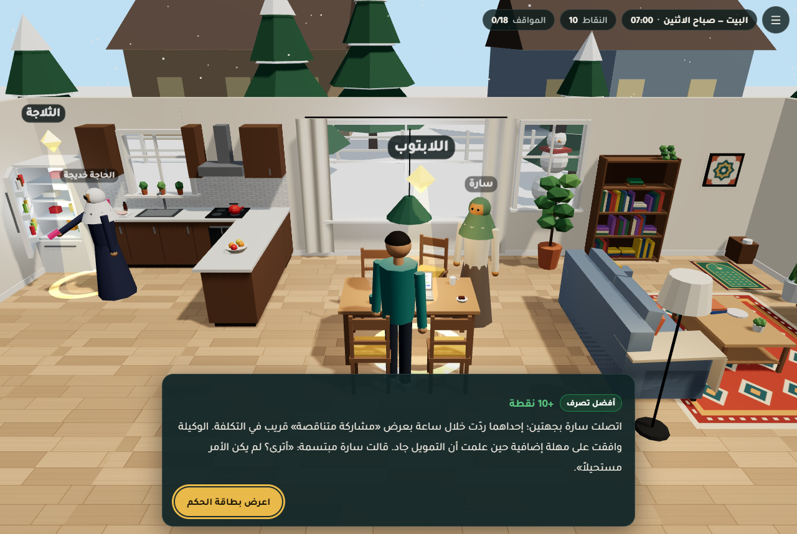
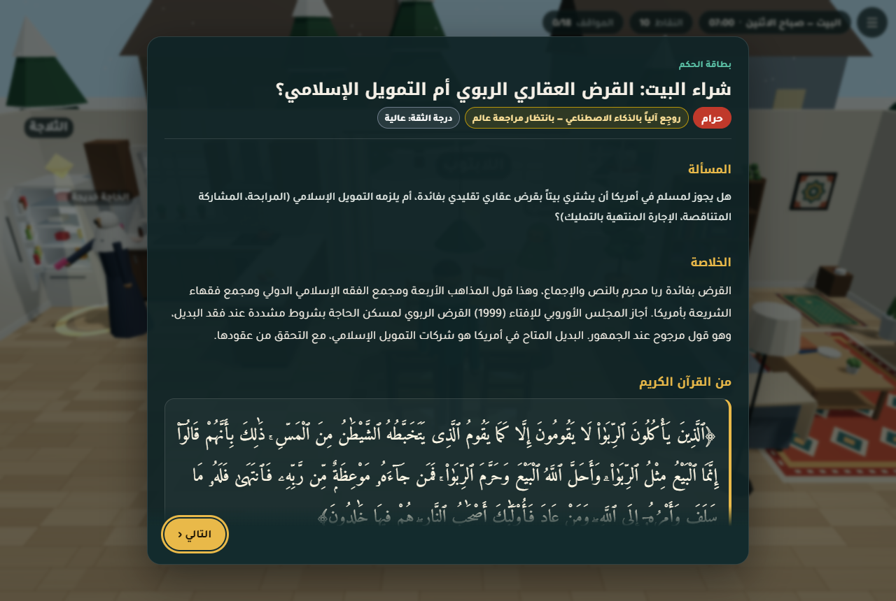

«يومك» لعبة ويب ثلاثية الأبعاد تعمل في المتصفح على الحاسوب والهاتف. تتابع يوماً من حياة «آدم»، مهندس برمجيات مسلم عمره 28 سنة يعيش في كولومبس بولاية أوهايو. يمرّ اللاعب بست محطات، وفي كل محطة ثلاثة مواقف من فقه المعاملات يختار فيها تصرفاً. بعد الاختيار تظهر بطاقة حكم موثقة بالقرآن والحديث وأقوال المذاهب الأربعة والمجامع الفقهية المعاصرة.
في المرحلة الأولى بُني الأساس الذي تقوم عليه بقية المراحل: ملفات الأحكام، والسيناريو، والمحرك. ثم دقّق وكيل مستقل الأحكام آلياً وعلمياً، وأُصلحت التعارضات التي وجدها بين السيناريو والأحكام.
content/rulings)ai_verified)، و4 بقيت مسودة لعالمcontent/sources.jsonكل الأحكام في هذا المشروع مسودة أعدّها ذكاء اصطناعي. نُقلت نصوص الآيات والأحاديث آلياً من مصادرها وطوبقت حرفياً، ثم راجعها وكيل تدقيق آلي. لكن وسم ai_verified معناه «اجتاز الفحوص الآلية ولم يجد المدقق فيه خطأً جوهرياً»، وليس «معتمد شرعاً». لا يُعتمد أي حكم قبل مراجعة عالم شرعي بشري، وقائمة ما يحتاج المراجعة في القسم العاشر.
ينطلق المشروع من وثيقة التحدي، وفكرتها أن تقديم المعرفة داخل مواقف تفاعلية قريبة من حياة المستخدم يحسّن فهمه للتطبيق اليومي. واشترطت الوثيقة شرطين أساسيين: أن يُفصل المثال التخييلي عن المعلومة الدينية ومصدرها، وألا يُسمح للنموذج بتوليد نصوص منسوبة إلى القرآن أو السنة. ومن هذه الوثيقة استخرج المشرف في docs/TEAM_BRIEF.md خمسة مبادئ ملزمة لكل الوكلاء:
content/rulings/.notes_for_reviewer.| المرحلة | المحتوى | المخرجات |
|---|---|---|
| 1 — الأساس (هذا التقرير) | بحث شرعي، وسيناريو، ومحرك اللعبة | content/rulings/*.json، content/script/*.json، src/engine/*، reports/phase-1.pdf |
| 2 — المشاهد | بناء 6 مشاهد ثلاثية الأبعاد وربطها بالسيناريو، وتدقيق شرعي مستقل | src/scenes/*.js، docs/audit/*، reports/phase-2.pdf |
| 3 — التكامل والجودة | دمج، واختبارات، وتدقيق نهائي، ونشر، وتوثيق | dist/، tests/، README.md، reports/phase-3.pdf |
عرّف المشرف ثلاثة عقود بيانات ثابتة، فصار كل وكيل يعمل في مساره دون أن ينتظر الآخرين:
verdict، والملخص، والآيات، والأحاديث، وأقوال المذاهب الأربعة مع مراجعها، والقرارات المعاصرة، والإرشاد العملي، والبدائل الحلال، ومتى يُسأل عالم، ودرجة الثقة، وحالة المراجعة، وملاحظات للمراجع.ruling_id فقط. السيناريست لا يكتب نص آية أو حديث إطلاقاً.وكتالوج المواقف الثمانية عشر ثابت، ومعرّفاتها (مثل home.mortgage) لا تتغير.
نُفّذ المشروع بفريق من وكلاء ذكاء اصطناعي متخصصين، يكتب كل منهم في مسارات مخصصة له فقط كما يحدد هيكل المجلدات في TEAM_BRIEF.md. وأي اقتراح لتعديل العقود يرفعه الوكيل في تقريره إلى المشرف، ولا يعدّل الملف بنفسه.
| الوكيل | الدور | ما يملكه من ملفات |
|---|---|---|
| المشرف | يكتب العقود والكتالوج وهيكل المجلدات، ويوزّع المهام، ويجمع تقارير الوكلاء، ويوجّه الإصلاحات. | docs/TEAM_BRIEF.md |
| باحث شرعي (1) | أحكام البيت والعمل: التمويل العقاري، والطعام، وبطاقات الائتمان، والعمل في مطعم، و401(k)، والأمانة في العمل. | content/rulings/home.json، work.json، docs/research/home_work.md |
| باحث شرعي (2) | أحكام الكلية والشارع: الغش، والقرض الطلابي، والاختلاط والمصافحة، واللقطة، واليانصيب، والبيع والشراء. | school.json، street.json، docs/research/school_street.md |
| باحث شرعي (3) | أحكام المناسبات: التهنئة بالأعياد، ومائدة الخمر، والسحب الخيري، والعرس، والتعزية، والهدايا وأعياد الميلاد. | public_events.json، private_events.json، docs/research/events.md |
| السيناريست | يكتب القصة والشخصيات والحوار والخيارات وأسئلة الفهم، ويحدد نقاط التفاعل لكل مكان. | docs/story_bible.md، docs/hotspots.md، content/script/*.json |
| مهندس المحرك | يبني محرك اللعبة: العرض ثلاثي الأبعاد، والحركة والكاميرا، وتدفق المواقف، وبطاقة الحكم، واللغتين، وحفظ التقدم. | src/engine/**، index.html، package.json، vite.config.js |
| المدقق الشرعي المستقل | يعيد جلب كل آية وحديث ويطابقه، ويفحص الروابط، ويراجع الأحكام علمياً، ويبني سجل المصادر، ويرصد التعارض بين السيناريو والأحكام. | docs/audit/*، tools/audit/*، content/sources.json |
| 6 مصممي مشاهد (المرحلة 2) | وكيل لكل مكان يبني المشهد ثلاثي الأبعاد وفق hotspots.md وعقد المشهد. | src/scenes/<location>.js، docs/phase-2/scene_*.md |
| وكيل التوثيق | يكتب تقرير PDF لكل مرحلة بالعربية، ومصدره ملفات المشروع وحدها. | reports/phase-N.pdf، reports/src/ |
تقوم المنهجية على قاعدة واحدة: لا يدخل نص شرعي إلى الملفات إلا منقولاً آلياً من مصدره، ولا يُكتب شيء من الذاكرة. ووثّق كل باحث ما فتحه من مصادر فعلاً في docs/research/.
api.quran.com/api/v4، ترجمة Sahih International رقم 20)، أو من api.alquran.cloud (نص Tanzil).fawazahmed0/hadith-api، وهو مأخوذ من sunnah.com، ونصه العربي هو النص نفسه الذي يعرضه الموقع.dorar_api.json.tools/audit/manual_verifications.json.فُتحت قرارات مجمع الفقه الإسلامي الدولي من موقعه الرسمي، وفتاوى مجمع فقهاء الشريعة بأمريكا (AMJA) من موقعه. واستُعملت أيضاً قرارات المجلس الأوروبي للإفتاء والبحوث، ودار الإفتاء المصرية، ودائرة الإفتاء الأردنية، وغيرها. وفي ملفات الأحكام 53 إحالة معاصرة.
عُرضت الأقوال دون ترجيح متحيز في المسائل الحساسة: التهنئة بالأعياد، والمصافحة، والمعازف، والقرض للحاجة، وبطاقة الائتمان، وتعزية غير المسلم عند الحنابلة. ويُحسم الحكم بأحد ثمانية وسوم: haram، halal، makruh، mubah، mustahab، wajib، disputed، depends.
النصوص تُجلب بسكربت ولا تُكتب باليد. ثم يعيد المدقق المستقل جلبها من مصدر ثانٍ ويطابقها حرفاً وحركة. وأي فرق في حرف أو حركة يُفشل الفحص.
لكل حكم درجة ثقة، وحقل «متى تسأل عالماً»، وملاحظات للمراجع تذكر كل نقل غير مباشر وكل ما لم يُتحقق منه.
تتوزع الأحكام على الوسوم هكذا: حرام 8، يختلف بحسب الحال 6، مختلف فيه 2، واجب 1، مباح 1. والأعمدة الثلاثة الأخيرة عدد الآيات والأحاديث والإحالات المعاصرة في كل حكم.
| # | الموقف | الحكم | الثقة | حالة المراجعة | آيات | أحاديث | معاصر |
|---|---|---|---|---|---|---|---|
| 1 | شراء البيت: القرض العقاري الربوي أم التمويل الإسلامي؟home.mortgage | حرام | عالية | مدقق آلياً | 3 | 1 | 6 |
| 2 | طعام البيت: لحم السوبرماركت والجيلاتين وخلاصة الفانيلياhome.food_ingredients | يختلف بحسب الحال | متوسطة | مسودة — معلّق لعالم | 3 | 3 | 4 |
| 3 | بطاقة الائتمان و«اشترِ الآن وادفع لاحقاً»home.credit_card | مختلف فيه | متوسطة | مدقق آلياً | 3 | 2 | 3 |
| 4 | وظيفة جانبية: تقديم الخمر والخنزير أو برمجة تطبيق لمصنع جعةwork.alcohol_pork_job | يختلف بحسب الحال | متوسطة | مسودة — معلّق لعالم | 3 | 4 | 3 |
| 5 | خطة التقاعد 401(k) ومطابقة صاحب العملwork.retirement_401k | يختلف بحسب الحال | متوسطة | مدقق آلياً | 3 | 2 | 3 |
| 6 | الأمانة في العمل: هدايا الموردين وتسجيل الساعات وموارد الشركةwork.honesty_gifts | حرام | عالية | مدقق آلياً | 7 | 5 | 1 |
| 7 | الغش في الامتحان والواجباتschool.cheating | حرام | عالية | مدقق آلياً | 3 | 3 | 2 |
| 8 | القرض الطلابي بفائدة وبدائلهschool.student_loan | حرام | متوسطة | مدقق آلياً | 4 | 1 | 4 |
| 9 | مجموعة الدراسة المختلطة ومصافحة الأستاذةschool.mixed_social | يختلف بحسب الحال | متوسطة | مدقق آلياً | 1 | 5 | 3 |
| 10 | محفظة ضائعة في الشارع (اللُّقَطة)street.lost_wallet | واجب | عالية | مدقق آلياً | 2 | 3 | 0 |
| 11 | اليانصيب وبطاقات الكشط والمراهنات الرياضيةstreet.lottery | حرام | عالية | مدقق آلياً | 4 | 1 | 2 |
| 12 | البيع والشراء: إخفاء العيب والغبن والإكرامية والتقييم الكاذبstreet.buying_selling | حرام | عالية | مدقق آلياً | 5 | 5 | 2 |
| 13 | الكريسماس وعيد الشكر: التهنئة والحفل والهداياpublic_events.holiday_greetings | مختلف فيه | متوسطة | مدقق آلياً | 3 | 4 | 6 |
| 14 | حفلة الشركة: مائدة يُدار عليها الخمرpublic_events.alcohol_table | حرام | متوسطة | مدقق آلياً | 2 | 2 | 3 |
| 15 | السحب الخيري (Raffle)public_events.raffle | حرام | عالية | مدقق آلياً | 2 | 3 | 2 |
| 16 | زواج صديق مسلم: المهر والوليمة والإشهار والموسيقىprivate_events.wedding | يختلف بحسب الحال | متوسطة | مسودة — معلّق لعالم | 1 | 8 | 3 |
| 17 | وفاة الجار غير المسلم: التعزية والجنازة والدعاءprivate_events.neighbor_funeral | مباح | متوسطة | مدقق آلياً | 2 | 5 | 3 |
| 18 | الهدايا وأعياد الميلادprivate_events.gifts_birthday | يختلف بحسب الحال | متوسطة | مسودة — معلّق لعالم | 1 | 7 | 3 |
| المجموع | 52 | 64 | 53 | ||||
المصدر: ملفات content/rulings/*.json كما هي وقت إعداد التقرير. «مسودة — معلّق لعالم» تعني أن المدقق المستقل أبقى الحكم ai_draft لأن فيه مسألة تحتاج عالماً بشرياً، وتفصيلها في القسم العاشر.
هذه بطاقة home.mortgage كما هي في content/rulings/home.json. والآيات والحديث والأقوال منقولة من الملف حرفياً دون تحرير. وهي البطاقة التي يراها اللاعب بعد أن يختار تصرفه أمام لابتوب سارة في مشهد البيت.
هل يجوز لمسلم في أمريكا أن يشتري بيتاً بقرض عقاري تقليدي بفائدة، أم يلزمه التمويل الإسلامي (المرابحة، المشاركة المتناقصة، الإجارة المنتهية بالتمليك)؟
القرض بفائدة ربا محرم بالنص والإجماع، وهذا قول المذاهب الأربعة ومجمع الفقه الإسلامي الدولي ومجمع فقهاء الشريعة بأمريكا. أجاز المجلس الأوروبي للإفتاء (1999) القرض الربوي لمسكن الحاجة بشروط مشددة عند فقد البديل، وهو قول مرجوح عند الجمهور. البديل المتاح في أمريكا هو شركات التمويل الإسلامي، مع التحقق من عقودها.
الربا محرم، وكل زيادة مشروطة في القرض ربا. لكن عند أبي حنيفة ومحمد بن الحسن «لا ربا بين المسلم والحربي في دار الحرب»، وخالفهما أبو يوسف. واعتبرت دار الإفتاء المصرية قولهما هو المعتمد عند الحنفية. أما تطبيقه على أمريكا اليوم وعلى حالة يكون فيها المسلم هو دافع الفائدة لا آخذها، فمحل خلاف: يمنعه كثير من الحنفية المعاصرين، واعتمده المجلس الأوروبي سنداً ثانوياً.
الربا حرام في دار الحرب كحرمته في دار الإسلام، بين المسلم والحربي وبين المسلمين، لأن نصوص تحريم الربا عامة لم تفرّق بين دار ودار. وهذا قول الجمهور، ومنهم مالك.
الربا يجري في دار الحرب كما يجري في دار الإسلام، وحديث مكحول «لا ربا بين المسلمين وأهل دار الحرب» مرسل ضعيف لا حجة فيه.
كل قرض شُرط فيه أن يزيده فهو حرام بغير خلاف، ويحرم الربا في دار الحرب كتحريمه في دار الإسلام.
| الجهة والقرار | الموقف |
|---|---|
| مجمع الفقه الإسلامي الدولي القرار 10 (10/2)، الدورة الثانية، جدة، ديسمبر 1985 | كل زيادة أو فائدة على الدين عند حلول أجله مقابل تأجيله، وكل زيادة مشروطة في القرض عند التعاقد، كلاهما ربا محرم شرعاً. |
| مجمع الفقه الإسلامي الدولي القرار 50 (1/6)، الدورة السادسة، جدة، مارس 1990 (التمويل العقاري لبناء المساكن وشرائها) | المسكن حاجة أساسية تُلبّى بالطرق والأموال المشروعة. والتمويل العقاري بفائدة ربا محرم أياً كان سعر الفائدة. ومن البدائل المشروعة: البيع بالتقسيط والاستصناع. |
| مجمع الفقه الإسلامي الدولي القراران 40-41 (2/5، 3/5) الدورة الخامسة، الكويت 1988 (المرابحة للآمر بالشراء)؛ والقرار 136 (2/15) الدورة الخامسة عشرة، مسقط 2004 (المشاركة المتناقصة) | تجوز المرابحة للآمر بالشراء إذا تملك المصرف السلعة وقبضها وتحمّل تبعة هلاكها قبل التسليم. وتجوز المشاركة المتناقصة بضوابط، منها أن يتحمل كل شريك الخسارة بقدر حصته، وألا يكون الوعد بشراء الحصة ملزماً إلا لطرف واحد. |
| مجمع فقهاء الشريعة بأمريكا (AMJA) قرار لجنة الفتوى الدائمة بشأن شركات التمويل الإسلامي للمساكن في أمريكا، هيوستن، 15-17 سبتمبر 2014 | الاقتراض بفائدة محرم قليله وكثيره. وصنّف القرار الشركات ثلاث فئات: ما عقوده موافقة للشريعة في الجملة فيجوز (Ameen Housing بعد تعديل عقودها في يناير 2015، وMubarak Mortgage وNeeyah)، وما فيه مخالفات دون الفائدة الصريحة فيجوز عند الحاجة أو الحاجة الشديدة (Guidance Residential للحاجة؛ Devon Bank وUIF للحاجة الشديدة)، وما هو قرض ربوي في حقيقته فلا يجوز (LARIBA وIjara Loan). والحكم خاص بالعقود القائمة وقت صدوره. |
| المجلس الأوروبي للإفتاء والبحوث الدورة العادية الرابعة، دبلن، 18-22 رجب 1420هـ / 27-31 أكتوبر 1999 | أكّد المجلس تحريم الربا، ثم أجاز استثناءً للمسلم في أوروبا شراء مسكن بقرض ربوي بشروط: أن يكون البيت لسكناه وأسرته، وألا يملك بيتاً آخر، وألا يكون عنده من المال ما يكفي لشرائه بغير قرض، وعند فقد البديل الإسلامي. وبنى ذلك على أصلين: تنزيل الحاجة منزلة الضرورة، وقول أبي حنيفة ومحمد في المعاملة في غير دار الإسلام. وخالفه في ذلك جمهور المجامع والعلماء. |
| مؤتمر فقهي في ديترويت 1999 (بحسب د. منذر قحف) — لم يُتحقق من صدوره رسمياً عن Fiqh Council of North America المؤتمر الفقهي الدولي الثاني، ديترويت 1999 (نقل غير مباشر) | نقل د. منذر قحف أن هذا المؤتمر أجاز للأسر المسلمة في أمريكا الشمالية القرض العقاري التقليدي عند الحاجة للمسكن وفقد العقد الشرعي، لأن السكن اللائق حاجة أساسية. |
إن كنت تفكر في الأخذ بقول الحاجة بسبب ظرف خاص (أسرة كبيرة، أو لا تجد بديلاً في ولايتك، أو تواجه إخلاءً)، أو عند المفاضلة بين عقود الشركات الإسلامية، أو إن كان عليك قرض ربوي قائم.
ثقة عالية في أصل الحكم (تحريم القرض بفائدة) وفي نصوص الأدلة. تحتاج مراجعة: (1) الإحالات المذهبية للحنفية والشافعية والحنابلة منقولة بأرقام أجزاء وصفحات من مواقع فتوى (askimam، islamqa) ولم تُطابق على طبعة محددة. (2) المرجع المالكي من موسوعة عامة مصرية وليس من كتاب مالكي معتمد. (3) نسبة فتوى ديترويت 1999 إلى Fiqh Council of North America لم يُتحقق منها رسمياً، فوُضعت بوصف «مؤتمر فقهي». (4) تصنيف AMJA للشركات من 2014 وقد يكون تغيّر. (5) لم نجد نصاً عربياً رسمياً لقرار المجمع 50 (1/6) فصيغ الموقف العربي بالمعنى من النص الإنجليزي الرسمي. (6) الإجارة المنتهية بالتمليك: لم يُتحقق من رقم قرار المجمع فيها فلم يُذكر. نصوص الآيات من Tanzil (رسم عثماني) عبر api.alquran.cloud مع ترجمة Sahih International. نص الحديث منقول آلياً من hadith-api (مصدر sunnah.com) وتُحقق من الرقم 1598 بالبحث، لأن sunnah.com يمنع الجلب المباشر (403).
[تدقيق المرحلة 1 — 2026-10-05] تحققتُ مباشرة من قرار AMJA (هيوستن 15-17 سبتمبر 2014): التصنيف مطابق (Guidance: يجوز للحاجة؛ Devon Bank بعقديه وUIF: للحاجة الشديدة؛ LARIBA وIjara Loan: لا يجوز؛ Ameen Housing: جائز بعد تعديل يناير 2015)، وأُضيفت شركتان صنّفهما القرار جائزتين (Mubarak Mortgage، Neeyah). أرقام قرارات المجمع 10 (10/2)، 50 (1/6)، 40-41 (2/5، 3/5)، 136 (2/15) صحيحة. ملاحظات الباحث بشأن المراجع المذهبية الثانوية (islamqa/askimam) ما تزال قائمة لكنها لا تمس الحكم المجمع عليه. نجحت الفحوص الآلية.
بعد أن أنهى الباحثون عملهم، أعاد وكيل تدقيق مستقل فحص الأحكام الثمانية عشر آلياً وعلمياً. وراجع ملفات السيناريو أيضاً مراجعة سريعة. التقرير الكامل في docs/audit/phase1_audit.md، ومخرج الفحص في docs/audit/verify_output_2026-10-05.txt.
| البند | النتيجة |
|---|---|
| الاستشهادات القرآنية | 52 استشهاداً و27 آية فريدة: 27/27 مطابقة حرفياً |
| الاستشهادات الحديثية | 64/64 مطابقة: 61 آلياً و3 يدوياً، والثلاثة من خارج الكتب الستة |
الفحوص الآلية (verify.mjs) | 187 فحصاً: 187 نجاح، 0 تحذير، 0 فشل، والسكربت يخرج بالكود 0 |
الروابط في ملفات الأحكام (links.mjs) | 153 رابطاً: 85 سليم، و67 محجوب عن الجلب الآلي (sunnah.com/dorar، رمز 403)، و0 معطوب |
أحكام وُسمت ai_verified | 14 |
أحكام بقيت ai_draft | 4: home.food_ingredients، work.alcohol_pork_job، private_events.wedding، private_events.gifts_birthday |
| أحكام عُدّل محتواها | 7، وتفصيلها في الجدول التالي |
| تعارضات بين السيناريو والأحكام | 6، وتفصيلها في القسم التاسع |
سجل المصادر content/sources.json | 209 مدخلات: قرآن 27 (موثق 27)، حديث 58 (موثق 58)، مذهبي 72 (موثق 0)، معاصر 52 (موثق 7) |
| الحكم | نوع التعديل | التفصيل |
|---|---|---|
home.credit_card | تصحيح علمي | كان الملخص يعمّم فيقول إن «غرامة التأخير المشروطة ربا باتفاق». والصواب أنها ممنوعة عند المجمع (القرار 51) والجمهور، مع خلاف معاصر معروف. فأُعيدت صياغة الملخص بالعربية والإنجليزية. |
private_events.neighbor_funeral | تصحيح علمي | تأكد نص الحنابلة في الإقناع وكشاف القناع: «ويحرم تهنئتهم وتعزيتهم وعيادتهم». فحُدّثت خانة الحنابلة وأُضيف ذلك إلى الملخص توازناً. |
home.mortgage | تصحيح علمي | أُضيفت شركتان صنّفهما قرار AMJA (2014) جائزتين: Mubarak Mortgage وNeeyah، وأُضيف تاريخ تعديل عقود Ameen Housing (يناير 2015). |
home.food_ingredients | تصحيح مرجع | صُحّح decision_ref لوثيقة AMJA إلى «المؤتمر التاسع» بعد قراءة الوثيقة. |
school.student_loanpublic_events.holiday_greetingsprivate_events.gifts_birthdayprivate_events.neighbor_funeral | تصحيح اسم مفتٍ | ورد اسم المفتي بصيغ خاطئة («منير/معين/ماجد القضاة»)، فصُحّح إلى «د. مائن خالد القضاة» بعد التأكد منه في موقع AMJA. |
street.lottery | إضافة لاحقة | أُضيف إلى الإرشاد العملي بند عن «الرهان المجاني» في تطبيقات المراهنة، بالعربية والإنجليزية. وهو مبني على قرار المجمع 127 وآية المائدة 90 وحديث البخاري 4860. والبند تخريج من المدقق وليس فتوى منقولة، لذلك أُدرج في قائمة المراجعة. |
تحقق المدقق من هذه المصادر مباشرة، إضافةً إلى الآيات والأحاديث:
أما بقية الإحالات المذهبية والمعاصرة فرُوجعت للتأكد من انسجامها مع المشهور، لكنها لم تُطابق على المطبوع. لذلك يبقى وسمها verified: false في سجل المصادر.
وصف المدقق عمل الباحثين بأنه «أمين ومتحفّظ»:
ولم يجد ترجيحاً متحيزاً ولا تساهلاً غير مسند، إلا في ملاحظتين: الأولى على إرشاد 401(k) («صندوق مؤشر عام مؤقتاً مع التطهير»)، والثانية على ملخص بطاقة الائتمان، وقد صُحّح.
كتب السيناريست docs/story_bible.md مرجعاً لكل من يكتب حواراً أو يبني مشهداً. القصة تخييلية بالكامل. تجري أحداثها في أسبوع من منتصف ديسمبر، وهو موسم الأعياد الأمريكية ونهاية الفصل الدراسي، لكنها تُروى على أنها «يومك».
آدم أمريكي المولد عمره 28 سنة، وُلد في ديربورن لأب لبناني وأم مصرية. يعمل مهندس برمجيات مبتدئاً في شركة لوجستيات تخييلية اسمها Buckeye Freight Tech، ويكمل دراسة مسائية في كلية مجتمع. هو لطيف ويكره الإحراج، ويميل إلى قول «نعم» بسرعة ثم يندم. وصراع القصة الهادئ أنه يريد أن يكون مسلماً ملتزماً ومحبوباً في عمله معاً. وهدفه في القصة شراء أول بيت للأسرة قبل الصيف، دون أن يتنازل عمّا يؤمن به.
| الشخصية | من هي | المحطة والموقف |
|---|---|---|
| سارة | زوجة آدم (26)، ممرضة أطفال، عملية ومرحة | البيت: القرض العقاري |
| الحاجة خديجة | أم آدم (58)، أرملة، تقرأ الملصقات بنظارتها | البيت: مكونات الطعام |
| بلال | أخو آدم (19)، طالب جامعي متحمس للتقنية | البيت: بطاقة الائتمان |
| جيك تومسون | زميل مبرمج (31)، ودود ومحب لكرة القدم الأمريكية | العمل: الوظيفة الجانبية. الحفل: مائدة الخمر |
| ليندا تشن | مسؤولة الموارد البشرية (45) ومنظمة الحفل | العمل: 401(k). الحفل: السحب الخيري |
| مايك روسو | مندوب شركة مورّدة (40)، يحب الهدايا | العمل: هدايا الموردين |
| ديف كوالسكي | مدير الفريق (52)، يحب موسم الأعياد | الحفل: التهنئة وتبادل الهدايا |
| تايلر بروكس | زميل في المادة (22)، يعمل بدوامين ومضغوط | الكلية: الغش |
| روزا رودريغيز | مستشارة المساعدات المالية (50) | الكلية: القرض الطلابي |
| د. كارين ميتشل | أستاذة المادة (47)، صارمة في المحاضرة ودافئة خارجها | الكلية: المصافحة |
| الضابط راي دانيالز | شرطي دورية في الحي (38) | الشارع: المحفظة الضائعة |
| عمر حسن | صديق آدم المقرّب (29)، أمريكي من أصل صومالي | الشارع: اليانصيب والمراهنات |
| دينيس ووكر | مشترية من Marketplace (35) | الشارع: البيع وإخفاء العيب |
| مارغريت هاريس | الجارة المسنة (76)، توفي زوجها والتر | الجيران: التعزية |
| ماريا غارسيا | الجارة المقابلة (34)، أم ليو | الجيران: الهدايا وعيد الميلاد |
| يوسف رحمن | صديق من المسجد (30)، العريس | العرس |
| الإمام حمزة عبد الله | إمام المركز الإسلامي (50)، «المختص» الذي يُحال إليه في القصة | يُذكر في الحوار، ويظهر في العرس عاقداً للنكاح |
| # | المحطة | اليوم والوقت | الإضاءة | ما يحدث |
|---|---|---|---|---|
| 1 | البيتhome | الاثنين 15 ديسمبر، 07:00 | نهار | الفطور. سارة وجدت البيت المثالي (قرض أم تمويل إسلامي؟)، وأم آدم تفتش الثلاجة (المكونات)، وبلال يريد هاتفاً بالتقسيط (بطاقة ائتمان أو «اشترِ الآن وادفع لاحقاً»). |
| 2 | العملwork | الاثنين، 10:00 | نهار | جيك يعرض عملاً جانبياً في مطعم ابن عمه وفي تطبيق لمصنع بيرة، وليندا تسأل عن خيارات 401(k)، ومايك المورّد يهدي ساعة ذكية. |
| 3 | الكليةschool | الاثنين، 18:30 | مساء | تايلر يطلب إجابات الاختبار، والسيدة رودريغيز تعرض قرضاً طلابياً، ود. ميتشل تمد يدها للتهنئة بعد مجموعة الدراسة. |
| 4 | الشارعstreet | الاثنين، 21:00 | ليل | محفظة منسية على مقعد محطة الحافلات، وعمر يقترح تذكرة يانصيب في محطة الوقود، ودينيس تأتي لشراء الدراجة الكهربائية. |
| 5 | المناسبات العامةpublic_events | الجمعة 19 ديسمبر، 19:00 | مساء | حفل نهاية العام للشركة في قاعة فندق: تبادل الهدايا والتهنئة، ومائدة يُدار عليها النبيذ، وسحب خيري. |
| 6 | المناسبات الخاصةprivate_events | السبت 20 ديسمبر، 10:00 ← المساء | نهار | صباحاً تعزية مارغريت، وظهراً عيد ميلاد ليو، ومساءً عرس يوسف ومريم. |
يبدأ آدم بإرضاء الجميع. ثم يتعلم أن «لا» المهذبة إذا جاء معها بديل تحفظ الاحترام بل تزيده. وفي النهاية يقف في العرس بين أهله وأصدقائه المسلمين وغير المسلمين، والرسالة أن الالتزام والانتماء إلى المجتمع الأمريكي لا يتعارضان.
وللنبرة سبع قواعد ملزمة لكل من يكتب نصاً، أهمها:
الخيار الأفضل يعطي 10 نقاط، والمقبول 5، والخاطئ 0. والإجابة الصحيحة عن سؤال الفهم تضيف 5. فالحد الأقصى 18 × 15 = 270 نقطة. وتعرض شاشة النهاية نقاط اليوم وعدد المواقف التي اختار فيها اللاعب الأفضل، دون حكم على اللاعب نفسه.
لم يعدّل المدقق ملفات السيناريو، لكنه قابل كل خيار ووسمه (أفضل، مقبول، خاطئ) ببطاقة الحكم المرتبطة به. ووجد أن السيناريو يحترم الأحكام في الجملة: لا يكتب نصوصاً شرعية، ويحيل إلى البطاقة، ولا تعارض في أسئلة الفهم الثمانية عشر. لكنه رصد 6 تعارضات وملاحظة صياغية واحدة. ثم طُبّقت 7 تعديلات على ملفات السيناريو (docs/phase-1/script_fixes.md)، وأُعيد تشغيل أداة التحقق: 18 موقفاً و0 أخطاء، وكل ملفات JSON صالحة. وقد تحققتُ عند إعداد هذا التقرير من أن ملفات السيناريو الحالية تطابق الإصلاحات.
| الموقف | التعارض الذي رصده المدقق | الإصلاح المطبّق |
|---|---|---|
home.credit_card | الحكم «مختلف فيه»، والإرشاد العملي يقدّم بطاقة الخصم لأنها «بلا شبهة». ومع ذلك جعل السيناريو «بطاقة ائتمان مع سداد كامل» (c) هي الأفضل، فوق «بطاقة خصم وادخار» (b). | صار b الأفضل / 10، وصار c مقبولاً / 5 بعاقبة محايدة تذكر الخلاف المعاصر. |
work.alcohol_pork_job | الخيار a «مقبول» (برمجة تطبيق مصنع جعة)، لكن عاقبته تصف بناء صفحة «Order a keg» وزر «Add to cart»، وهذه إعانة قريبة على البيع. | صار a خاطئاً / 0. وتبقى في العاقبة كلمة الإمام حمزة: كثير من العلماء يمنعه، والأحوط تركه عند وجود البديل. وصار الخيار c يذكر أطباق ضلوع الخنزير صراحة مع البيرة. |
street.lottery | الخيار c «خاطئ» («الرهان المجاني»)، والعاقبة تقول إن البطاقة تشرح السبب، لكن البطاقة لم تكن تعالج الرهان المجاني في تطبيقات المراهنة. | أضاف المدقق إلى البطاقة بنداً عن «الرهان المجاني». وأُعيدت كتابة العاقبة: التسجيل في منصة مراهنة ببطاقة بنكية وهوية ليس سحباً مجانياً. |
street.lost_wallet | الخيار c «مقبول»: ترك المحفظة عند كاشير محطة الوقود. والمحطة ليست مكان الالتقاط، والشرطي حاضر، والتسليم لغير مؤتمن مع إمكان الأوثق قد يُعدّ تفريطاً. | صار c: حفظ المحفظة في البيت وإيصالها غداً بنفسه إلى العنوان (مقبول / 5)، مع عاقبة تبيّن أن تسليمها للضابط كان أسرع وأوثق. |
private_events.wedding | الخيار b «مقبول»: البقاء حتى النهاية رغم الرقص المختلط والشرب، والتبرير بأن «الموسيقى خلافية». والإشكال ليس في الموسيقى وحدها. | صار الـDJ في المشهد يجهّز ساحة الرقص لما بعد العشاء. وصار a (الأفضل): التهنئة والعشاء والصور ثم الاستئذان بلطف قبل الرقص والشرب. وصار b خاطئاً / 0. |
private_events.gifts_birthday | الخيار الأفضل فيه عبارة «احتفظي بالنبيذ لنفسك، أعرف أنه مشروبك المفضل»، وقد تُفهم استحساناً لشربها. | صارت العبارة: «أنا لا أشرب، فاسمحي لي أن أعيد إليك النبيذ». وحُذف من حوار ماريا أن النبيذ مشروبها المفضل. |
public_events.alcohol_table | ملاحظة صياغية: كلمة «cider» في أمريكا قد تعني عصير التفاح المسكر. | صارت في الإنجليزية «sparkling apple juice» و«juice table». والعربية تقول أصلاً «عصير التفاح الفوار». |
ما زال حكم work.alcohol_pork_job مسودة. والبطاقة لا تعالج صراحة حكم تقديم الخنزير لغير المسلم وأجرته. وهذا أول بند في قائمة المراجع البشري.
مصادر هذا القسم: تقرير وكيل المحرك docs/phase-1/engine.md، ودليل وكلاء المشاهد src/engine/README.md، والشيفرة نفسها، وتشغيل فعلي للعبة في Chrome بلا واجهة أجراه وكيل التوثيق.
المحرك مبني على Three.js r170 وأداة البناء Vite 6، ويتكون من 18 ملف JavaScript (نحو 2,348 سطر دون بيانات الاختبار). كل الهندسة إجرائية، ولا يستعمل أي ملفات خارجية. وهو مسؤول عن كل ما بين ملفات المحتوى والمشاهد: يحمّل الأحكام والسيناريو، ويبني المشهد ويتحقق منه، ويدير حركة آدم والكاميرا، ويعرض المواقف وبطاقات الحكم، ويحفظ التقدم.
| الوحدة | الوظيفة |
|---|---|
game.js | متحكم التدفق: شاشة البداية، ثم المقدمة، ثم حلقة المحطات، ثم الملخص. وفيه حلقة الإطارات وأدوات التصحيح window.yawmuk. |
world.js | العارض (دقة بكسل ≤ 2، ظلال ناعمة)، والكاميرا، وإعدادات الإضاءة الثلاثة: نهار، ومساء، وليل. |
sceneManager.js | بناء المشهد والتحقق من مخرجاته: علامات نقاط التفاعل، والشخصيات، والحدود، وحواجز الكاميرا، والتخلص من الموارد. |
sceneRegistry.js | تحميل كسول للمشاهد من src/scenes/*.js، والرجوع إلى غرفة بديلة إن فشل مشهد. |
kit.js · mats.js | أدوات بناء المشاهد (صندوق، أسطوانة، جدار، غرفة، صندوق تصادم)، ومولّد الشخصيات makeNPC، واللافتات makeLabel، ولوحة خامات مشتركة. |
player.js · input.js | حركة آدم والتصادم، والكاميرا التابعة. والتحكم بلوحة المفاتيح والفأرة، وعصا تحكم لمسية وزر تفاعل على الهاتف. |
content.js | قراءة content/rulings وcontent/script، والإبلاغ عن مشكلات المحتوى، والرجوع إلى بيانات اختبار عند غيابه. |
progress.js | حفظ التقدم في localStorage داخل try/catch. يحتفظ بأفضل نقاط لكل موقف، فلا تنقص النقاط عند إعادة المحاولة، ويضيف مكافأة سؤال الفهم. |
i18n.js · ui/* | النصوص بالعربية والإنجليزية وتبديل الاتجاه. وواجهات الحوار والخيارات والعاقبة وبطاقة الحكم وسؤال الفهم والشاشات. |
1. يقترب آدم من نقطة التفاعل.
2. يظهر الحوار، ثم الخيارات، ويُخلط ترتيبها في كل مرة.
3. تظهر العاقبة والنقاط.
4. تظهر بطاقة الحكم، ومصدرها ملفات الأحكام وحدها.
5. يأتي سؤال الفهم (+5).
6. يُعلَّم الموقف منتهياً، ويمكن «تجربة خيار آخر».
والمخرج يبقى مقفلاً حتى تنتهي مواقف المحطة الثلاثة، ثم ينقل إلى المحطة التالية. وبعد المحطة الأخيرة تظهر شاشة الملخص.


ai_draft وai_verified يُعرضان «بانتظار مراجعة عالم». ولا يظهر وسم «رُوجع» إلا بعد مراجعة بشرية صريحة.textContent، ولا تُعرض إلا روابط http(s).?scene= وnointro=1 وdebug=1 وlang= وfreeexit=1، والدوال yawmuk.teleport() وyawmuk.stats() وyawmuk.contentIssues.npm run build ينجح.t في حلقة الإطارات، وكان قد ظهر عند الاقتراب من أي مخرج. وصارت اللافتات تحترم العمق افتراضياً.ملاحظة من تقرير المحرك: حجم حزمة index نحو 570 kB لأن الأحكام مضمّنة كنص JSON. وهذا مقبول، ويمكن تقسيمه لاحقاً بحسب المكان. وتفاصيل اكتشاف أخطاء المحرك وإصلاحها في تقرير المرحلة الثانية.
الأحكام الثمانية عشر كلها مسودة ذكاء اصطناعي، ووسمها في الملفات ai_verified أو ai_draft، ولم يحمل أي منها وسم مراجعة بشرية بعد. والفحوص الآلية تضمن أن النص المنقول مطابق لمصدره، لكنها لا تضمن صحة تنزيل الدليل على المسألة. فيجب أن يراجعها عالم شرعي قبل أي نشر عام.
| # | الحكم | ما يحتاج قراراً من عالم |
|---|---|---|
| 1 | work.alcohol_pork_job | حكم تقديم الخنزير لغير المسلم وأجرته، ودرجة الإعانة في «برمجة متجر خمور». |
| 2 | home.credit_card | توثيق الخلاف في غرامات التأخير بعد تصحيح الملخص، وترتيب «بطاقة الخصم» و«البطاقة مع السداد الكامل». وقد عُدّل السيناريو بحسب اقتراح المدقق. |
| 3 | private_events.wedding | توثيق نقلين عن الحنفية: «إجابة الدعوة سنة عند كثير من الحنفية»، و«الدف مكروه تحريماً للرجال». وفتوى دار الإفتاء 11981 لم تُفتح. |
| 4 | home.food_ingredients | حكم خلاصة الفانيليا (35% كحول) تحديداً، وتوثيق أقوال المذاهب في الاستحالة من كتبها. |
| 5 | private_events.neighbor_funeral | بعد إضافة المعتمد الحنبلي (التحريم): هل يبقى الوسم «مباح» أم يصير «مختلف فيه»؟ |
| 6 | street.lottery | مراجعة البند المضاف عن «الرهانات المجانية الترويجية». هو تخريج من المدقق وليس فتوى منقولة. |
| 7 | private_events.gifts_birthday | إثراء خانات المذاهب (شرح السير الكبير، والمغني)، ومسألة إراقة الخمر المهداة. |
| 8 | work.retirement_401k | صياغة ترخيص «صندوق المؤشر العام مؤقتاً» قولاً لا توجيهاً، وزكاة 401(k). |
| 9 | الإحالات المذهبية (72) | مطابقة الجزء والصفحة على طبعات محددة. والأولوية لما نُقل عبر مواقع فتوى: mortgage، وcredit_card، وhonesty_gifts، وalcohol_pork_job، وholiday_greetings. |
| 10 | معلومات قانونية أمريكية | تحتاج مختصاً قانونياً: ORC 737.29 في أوهايو، وTitle VII، وشروط القرض المدعوم بعد تشريعات 2025، وخطوط المساعدة من إدمان القمار، وقاعدة FTC للتقييمات (2024). |
verified: false، ومن الإحالات المعاصرة الـ52 في سجل المصادر وُثّق 7 فقط. أما الآيات والأحاديث فموثقة كلها.node tools/audit/verify.mjs && node tools/audit/links.mjs في CI.content/sources.json بعد أي تعديل على الأحكام.tools/audit/.cache/ (نحو 50MB) إلى .gitignore.— نهاية تقرير المرحلة الأولى —
مصادر هذا التقرير: docs/TEAM_BRIEF.md docs/story_bible.md docs/hotspots.md docs/research/*.md docs/audit/phase1_audit.md docs/phase-1/script_fixes.md content/** src/engine/**